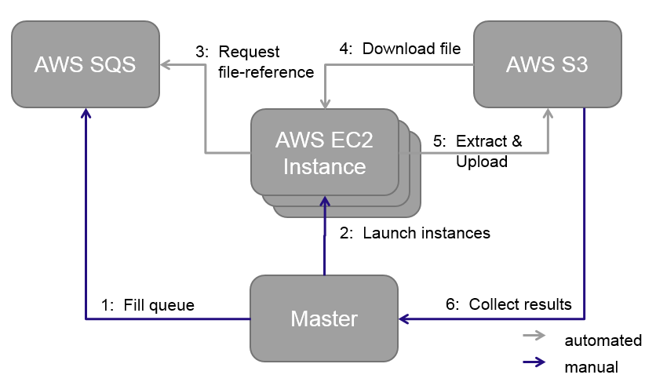

This page provides an overview about the framework which is used by the Web Data Commons project to extract datasets from the crawls provided by the Common Crawl Foundation. The framework was first designed by Hannes Mühleisen for the extraction of Microdata, Microformats and RDFa from the Common Crawl. Later extended to be able to extract the hyperlink graph as well as the web tables.
Contents
1. General Information
The framework was developed by the WDC to process a large number of files from the Common Crawl in parallel using the cloud services of Amazon. The software is written in Java using Maven as build tool and can be run on any operating system.
The picture below explains the principle process flow of the framework, which is basically steered by one master node, which can be either a local server or machine, or a cloud instance itself.

- From the master node the AWS Simple Queue Service is filled with all files which should be processed. Those files represent the task for the later working instances and are basically file references.
- From the master node a number of instances are launched within the EC2 environment of AWS. After the start up, each instances will install automatically the WDC framework and launch it.
- Each instance, after starting the framework will automatically requests a task from the SQS and start processing the file.
- The file will first be downloaded from S3 and will than be processed by the worker.
- After finishing one file the result will be stored in the users own S3 Bucket. And the worker will start again at 3.
- After the queue is empty the master can start collecting the extracted data and statistics.
2. Getting Started
Running your own extraction using the WDC Extraction Framework is rather simple and needs just some minutes to set yourself up. Please follow the steps below and make sure you have all requirements in place.
2.1. Requirements
In order to run an extraction using the WDC Framework the following is required:
- Amazon Web Service Account/User: As the framework is currently tailored to be run using services from Amazon, you will need to have an AWS with sufficient amount of credits. The user needs rights to access the AWS Services: EC2, S3, SQS and Simple DB.
- AWS Access Token: In order to make use of the Amazon services through the framework you need have your AWS
Access Key Idas well as yourSecret Access Key. Both is available through the Web Interface of AWS in the section IAM (See AWS IAM Docs). In case you do not have access to this section with your user, contact the administrator of your AWS account. - Java: On machine has to serve as master node. This machine, no matter if its your local server/computer or an EC2 instance within AWS needs to have Java 6 or higher installed to run the commands and control the extraction, e.g.:
apt-get install openjdk-7-jdk - Maven: In order to compile your own version of the framework you need to have Maven3 in place. Building the project with Maven2 will not work, as the project makes use of certain plugins, which are unknown to version 2 of Maven:
apt-get install maven - Subversion: In order to get the code, you need subversion installed:
apt-get install subversion
2.2. Building the code
Below you find a very detailed step by step description how to build the WDC Extraction Framework:
- Create a new folder for the repository and navigate to the folder:
mkdir ~/framework
cd ~/framework - Download the code of the framework from the Assembla.com WDC Repository. The WDC Extraction Framework code is located under
WDCFramework/trunk/:svn checkout https://subversion.assembla.com/svn/commondata/WDCFramework/trunk - Create a copy of the
dpef.properties.distfile within the/src/main/resourcesdirectory and name itdpef.properties. Within this file all needed properties/configurations are stored:cp extractor/src/main/resource/dpef.properties.dist extractor/src/main/resource/dpef.properties - Go through the file carefully and adjust at least all properties marked with
TODO. Each property is described in more detail within the file. The most important properties are listed below:awsAccessKeyandawsSecretKey: Those keys are mandatory to get access to the AWS API and run any commands.resultBucketanddeployBucket: Those S3 buckets will be used the framework to store the results of the extraction and to store the packages .jar file for later deployment on any launched instance. You can create the buckets either via the Web Interface or using the command line tools3cmd:apt-get install s3cmd
s3cmd --configure
s3cmd mb s3://[resultbucketname]
s3cmd mb s3://[deploybucketname]ec2instancetype: Defines the type of EC2 instances which will be launched. In order to find out which instance type servers your needs best, visit the ec2 instance type website. Former extractions by the WebDataCommons team where mainly done usingc1.xlargeinstances.processorClass: This property defines which class is used for the extraction. So far three classes are implemented, which where used to run the former extractions of the WebDataCommons team:org.webdatacommons.hyperlinkgraph.processor.WatProcessor, which was used to extract the hyperlink graph from the .wat files of the Spring 2014 Common Crawl dataset.org.webdatacommons.structureddata.processor.ArcProcessor, which was used to extract the RDFa, Microdata and Microformats from the .arc files of 2012 Common Crawl dataset.org.webdatacommons.structureddata.processor.WarcProcessor, which was used to extract the RDFa, Microdata and Microformats from the .warc files of the November 2013 Common Crawl dataset.
org.webdatacommons.framework.processor.FileProcessorinterface.
- Package the WDC Extraction Framework using Maven. Make sure you are using Maven3, as earlier versions will not work.
Note: When packaging the project for the first time, a large number of libraries will be downloaded into your .m2 directory, mainly from breda.informatik.uni-mannheim.de, which might take some time.mvn package
After successfully packaging the project, there should be a new directory, namedtargetwithin your root directory of the project. Besides others, this directory should include the packaged .jar file:dpef-*.jar
2.3 Running your first extraction
After you have packaged the code you can use the bin/master bash script to start and steer your extraction. This bash scripts calls functions implemented within the org.webdatacommons.framework.cli.Master class. To execute the script you need to make it executable:
chmod +x bin/master- Deploy to upload the JAR to S3:
./bin/master deploy --jarfile target/dpef-*.jar - Queue to fill the extraction queue with the Common Crawl files you want to process:
Please note, that the queue command is just fetching files within one folder. In case you need files located in different folders use the bucket prefix file option of the command. You can also limit the number of files pushed to the queue./bin/master queue --bucket-prefix CC-MAIN-2013-48/segments/1386163041297/wet/ - Start to launch EC2 extraction instances from the spot market. The command will keep starting instances until it is cancelled, so beware! Also, the price limit has to be given. The current spot prices can be found at http://aws.amazon.com/ec2/spot-instances/#6. A general recommendation is to set this price at about the on-demand instance price. This way, we will benefit from the generally low spot prices without our extraction process being permanently killed. The price limit is given in US$.
Note: It may take a while (approx. 10 Minutes) for the instances to become available and start taking tasks from the queue. You can observe the process of the spot requests within the AWS Web Dashboard../bin/master start --worker-amount 10 --pricelimit 0.6 - Monitor to monitor the process including the number of items in the queue, the approximate time to finish and the number of running/requested instances
./bin/master monitor - Shutdown to kill all worker nodes and terminate the spot instance requests
./bin/master shutdown - Retrieve Data to retrieve all collected data to a local directory
./bin/master retrievedata --destination /some/directory - Retrieve Stats to retrieve all collected data statistics to a local directory from the Simple DB of AWS
./bin/master retrievestats --destination /some/directory - Clear Queue to remove all remaining tasks from the queue and delete it
./bin/master clearqueue - Clear Data to remove all collected data from the Simple DB
./bin/master cleardata
org.webdatacommons.framework.cli.Master.
3. Customize your extraction
In this section we show how to build and run your own extractor. For this task we think about a large number of text files, where each line consists of a number of chars. We are now interested in all lines which only consists of a number. We want to extract those numeric lines and in addition want to have two basic statistics about the each file, namely the total number of lines and the number of lines consisting of only digits.
3.1. Preliminaries
Building your own extractor is easy. Extractors are called processors within the WDC Extraction Framework and need to implement he FileProcessor.java interface:
package org.webdatacommons.framework.processor;The interface is fairly simple, as it only contains one method, which receives a
import java.nio.channels.ReadableByteChannel; import java.util.Map;
public interface FileProcessor {
Map<String, String> process(ReadableByteChannel fileChannel, String inputFileKey) throws Exception;
}
ReadableByteChannel, representing the file to process and the files name as input. As result the method returns a Map<String, String> of key value pairs containing statistics of the processed file. The returned key value pairs are written to the AWS Simple DB (see property sdbdatadomain of the dpef.properties). In case you do not need any statistics you can also return an empty Map.
In addition the WDC Extraction Framework offers a context class, named
ProcessingNode.java which allows the extending class to make use of contextual settings (e.g. AWS Services to store files). In many cases it makes sense to first have a look into this class before thinking about an own solution.
3.2. Building your own extractor
We create the TextFileProcessor.java which implements the interface and extends the ProcessingNode.java to make use of the context (see line 14).
The class will process a text file, read each line and check if the line consists only of digits. Lines matching this requirement will be written into a new output file.
The code processes the file in the following way:
- Initialization of counts (line 18 - 21)
- Creating a
BufferedReaderfrom theReadableByteChannel, which makes it easy to read the input file line by line (line 22/23) - Creating a
BufferedWriterfor a temporal file, which will be deleted as soon as we exit it. This ensures that the hard drive will not be flooded (line 24 - 30) - Processing the file line by line, counting each line and matching each line, if only digits are included (line 31 - 41)
- Having the file parsed completely, the output needs to be pushed to S3 using the context from
ProcessingNode.java(line 44 - 52) - Finally, we add the statistics of the file (number of lines, number of only digits lines) to the output map, which will be written to AWS Simple DB (line 53 - 56)
1 package org.webdatacommons.example.processor; 2 import java.io.BufferedReader; 3 import java.io.BufferedWriter; 4 import java.io.File; 5 import java.io.FileWriter; 6 import java.io.InputStreamReader; 7 import java.nio.channels.Channels; 8 import java.nio.channels.ReadableByteChannel; 9 import java.util.HashMap; 10 import java.util.Map; 11 import org.jets3t.service.model.S3Object; 12 import org.webdatacommons.framework.processor.FileProcessor; 13 import org.webdatacommons.framework.processor.ProcessingNode; 14 public class TextFileProcessor extends ProcessingNode implements FileProcessor {
15 @Override 16 public Map<String, String> process(ReadableByteChannel fileChannel, 17 String inputFileKey) throws Exception { 18 // initialize line count 19 long lnCnt = 0;
20 // initialize match count 21 long mCnt = 0;
22 // Creating a buffered reader from the input stream - the channel is not compressed 23 BufferedReader br = new BufferedReader(new InputStreamReader
(Channels.newInputStream(fileChannel))); 24 // Create a temporal file for our output 25 File tempOutputFile = File.createTempFile( 26 "tmp_" + inputFileKey.replace("/", "_"), ".digitsonly.txt"); 27 // we delete it on exit - so we do not flood the hard drive 28 tempOutputFile.deleteOnExit(); 29 // Create the writer for the output 30 BufferedWriter bw = new BufferedWriter(new FileWriter(tempOutputFile)); 31 while (br.ready()){ 32 // reading the channel file by file 33 String line = br.readLine(); 34 lnCnt++; 35 // Check if the line match our pattern 36 if (line != null && line.matches("[0-9]+")){ 37 mCnt++; 38 // write the line to the output file 39 bw.write(line); 40 } 41 } 42 br.close(); 43 bw.close();
44 // Now the file is parsed completely and the output needs to be stored to s3 45 // create an s3 object 46 S3Object dataFileObject = new S3Object(tempOutputFile); 47 // name the file 48 String outputFileKey = inputFileKey.replace("/", "_") + "digitsonly.txt"; 49 // set the name 50 dataFileObject.setKey(outputFileKey); 51 // put the object to the result bucket 52 getStorage().putObject(getOrCry("resultBucket"), dataFileObject); 53 // create the statistic map (key, value) for this file 54 Map<String, String> map = new HashMap<String, String>(); 55 map.put("lines_total", String.valueOf(lnCnt)); 56 map.put("lines_match", String.valueOf(mCnt)); 57 return map; 58 } 59 }
3.3. Packaging your new extractor
As the extractor is done, you simply need to add the processor into the property processorClass within the dpef.properties file and run mvn package.
4. Costs
The usage of the WDC framework is free of charge. Nevertheless, as the framework makes use of services from AWS, Amazon will charge you for the usage. There are several granting possibilities by Amazon itself, where Amazon supports ideas and projects running within their cloud system with free credits - specially in the education area (see Amazon Grants).
5. License
The Web Data Commons extraction framework can be used under the terms of the Apache Software License.
6. Feedback
Please send questions and feedback to the Web Data Commons mailing list or post them in our Web Data Commons Google Group.
More information about Web Data Commons is found here.